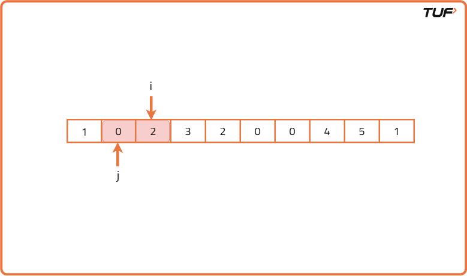
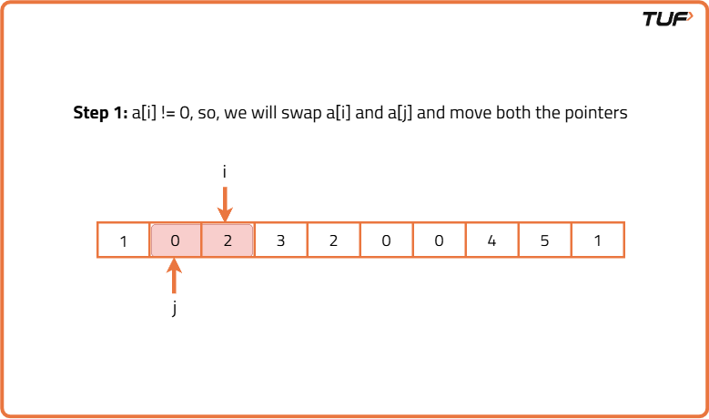
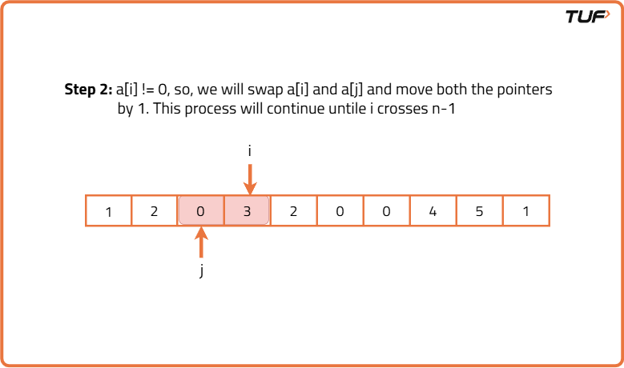

Move all Zeros to the end of the array
Problem Statement: You are given an array of integers, your task is to move all the zeros in the array to the end of the array and move non-negative integers to the front by maintaining their order.
Examples
Input: 1 ,0 ,2 ,3 ,0 ,4 ,0 ,1 Output: 1 ,2 ,3 ,4 ,1 ,0 ,0 ,0 Explanation: All the zeros are moved to the end and non-negative integers are moved to front by maintaining order Input : 1,2,0,1,0,4,0 Output: 1,2,1,4,0,0,0 Explanation : All the zeros are moved to the end and non-negative integers are moved to front by maintaining order
Disclaimer: Here is the practice link to help you assess your knowledge better. It's highly recommend trying to solve it before looking at the solution.
Brute Force Approach
Algorithm
The extremely naive solution, we can think of, involves the use of an extra array. The algorithm is as follows.
- Suppose, there are N-X zeros and X non-zero elements in the array. We will first copy those X non-zero elements from the original array to a temporary array.
- Then, we will copy the elements from the temporary array one by one and fill the first X places of the original array.
- The last N-X places of the original array will be then filled with zero. Now, our task is completed.
Code
#include <bits/stdc++.h>
using namespace std;
// Solution class
class Solution {
public:
// Function to move all zeroes to end
vector<int> moveZeroes(vector<int>& arr) {
// Create temp array
vector<int> temp(arr.size(), 0);
// Pointer to fill temp
int index = 0;
// Traverse input array
for (int i = 0; i < arr.size(); i++) {
// If non-zero, add to temp
if (arr[i] != 0) {
temp[index] = arr[i];
index++;
}
}
// Copy back temp to original
for (int i = 0; i < arr.size(); i++) {
arr[i] = temp[i];
}
// Return updated array
return arr;
}
};
// Main function
int main() {
vector<int> arr = {0, 1, 0, 3, 12};
Solution sol;
vector<int> result = sol.moveZeroes(arr);
// Print result
cout << "Array after moving zeroes: ";
for (int num : result) {
cout << num << " ";
}
cout << endl;
return 0;
}
Complexity Analysis
Time Complexity: O(N), we can move all zeroes to end in linear time.Space Complexity: O(N), additional space used for temporary array.
Optimal Approach
Algorithm
We can optimize the approach using 2 pointers i.e. i and j. The pointer j will point to the first 0 in the array and i will point to the next index.
Assume, the given array is {1, 0, 2, 3, 2, 0, 0, 4, 5, 1}. Now, initially, we will place the 2-pointers like the following:
Assume, the given array is {1, 0, 2, 3, 2, 0, 0, 4, 5, 1}. Now, initially, we will place the 2-pointers like the following:
- First, we iterate through the array to locate the position of the first zero, using a pointer j. If no zero is found, no further steps are needed.
- Next, we set a second pointer i to j + 1 and start moving it forward through the array.
- While moving i, whenever we encounter a non-zero element a[i], we swap it with the element at index j. After the swap, since j now holds a non-zero value, we increment j to point to the next zero.



Code
#include <bits/stdc++.h>
using namespace std;
class Solution {
public:
// Function to move zeroes to the end
void moveZeroes(vector<int>& nums) {
// Pointer to the first zero
int j = -1;
// Find the first zero
for (int i = 0; i < nums.size(); i++) {
if (nums[i] == 0) {
j = i;
break;
}
}
// If no zero found, return
if (j == -1) return;
// Start from the next index of first zero
for (int i = j + 1; i < nums.size(); i++) {
// If current element is non-zero
if (nums[i] != 0) {
// Swap with nums[j]
swap(nums[i], nums[j]);
// Move j to next zero
j++;
}
}
}
};
int main() {
Solution sol;
vector<int> nums = {0, 1, 0, 3, 12};
sol.moveZeroes(nums);
// Print the result
for (int num : nums) cout << num << " ";
cout << endl;
return 0;
}
Complexity Analysis
Time Complexity: O(N), we can move all zeroes to end in linear time.Space Complexity: O(1), constant additional space is used.